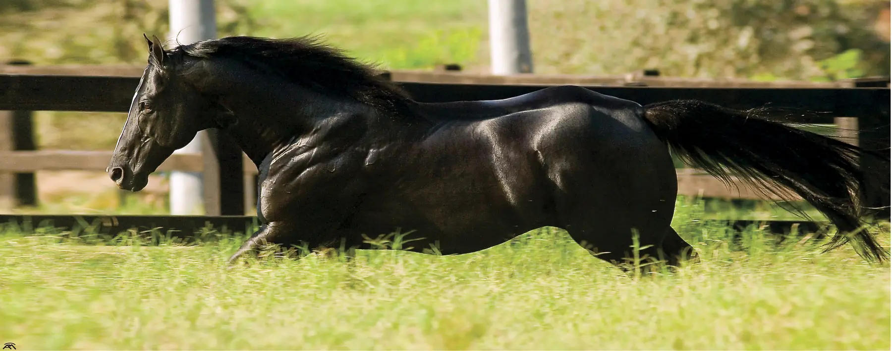

Notícias e resultados
Quase todo fim de semana tem prova. Resultados, tempos e novidades do B2B Ranch, de cada etapa.
2026
 B2B Brave Rolls conquista Top 3 na Final do Potro do Futuro
B2B Brave Rolls conquista Top 3 na Final do Potro do Futuro Elas entraram em pista para fazer acontecer. E fizeram!
Elas entraram em pista para fazer acontecer. E fizeram! B2B Ranch se destaca na 1ª etapa do VII Campeonato Heringer Ranch
B2B Ranch se destaca na 1ª etapa do VII Campeonato Heringer Ranch Barretos: o palco onde grandes histórias são escritas
Barretos: o palco onde grandes histórias são escritas B2B Brave Rolls é vice-campeã da Final Ouro do Potro do Futuro PF & Copa WV 2026
B2B Brave Rolls é vice-campeã da Final Ouro do Potro do Futuro PF & Copa WV 2026 Resultados do B2B Ranch na 1ª Etapa do XLI Campeonato RJQMB2B Brave Rolls: o futuro dos Três Tambores
Resultados do B2B Ranch na 1ª Etapa do XLI Campeonato RJQMB2B Brave Rolls: o futuro dos Três Tambores
Filhos de Tux N Rolls na Prova Seleção Nacional 2026B2B Ranch abre a temporada 2026 vencendo o GP ABQM da Copa Organnact2025
 Encerramento da temporada 2025 na RJQM destaca a criação B2B RanchConquistas do B2B Ranch no V Grand Slam Cutter, no Haras Raphaela
Encerramento da temporada 2025 na RJQM destaca a criação B2B RanchConquistas do B2B Ranch no V Grand Slam Cutter, no Haras Raphaela B2B Ranch no 46º Potro do Futuro 2025, Copa dos Campeões e Derby
B2B Ranch no 46º Potro do Futuro 2025, Copa dos Campeões e Derby Criação B2B Ranch na 1ª Etapa do VI Campeonato Heringer Ranch
Criação B2B Ranch na 1ª Etapa do VI Campeonato Heringer Ranch Programa de incentivo B2B Ranch e Rancho 3D no Campeonato RJQM
Programa de incentivo B2B Ranch e Rancho 3D no Campeonato RJQM B2B Ranch na 4ª Etapa do XXV Campeonato Regional Oeste
B2B Ranch na 4ª Etapa do XXV Campeonato Regional Oeste Agradecimentos e novidades do criatório B2B Ranch
Agradecimentos e novidades do criatório B2B Ranch B2B Ranch em destaque na 5ª Etapa do XXXIX Campeonato Estadual RJQMB2B Three Blackpearl e Mended Heart no 3º Grand Prix Rancho Gabriela
B2B Ranch em destaque na 5ª Etapa do XXXIX Campeonato Estadual RJQMB2B Three Blackpearl e Mended Heart no 3º Grand Prix Rancho Gabriela B2B The Fling French ganha mais de US$ 8 mil em Houston17º Leilão B2B Ranch & Amigos, em Araçatuba
B2B The Fling French ganha mais de US$ 8 mil em Houston17º Leilão B2B Ranch & Amigos, em AraçatubaFale com o B2B Ranch
Coberturas, genética e disponibilidade de produtos: responderemos pelo WhatsApp.
+55 (24) 99944-2266Falar no WhatsApp